How to use this lesson
§0 · From last time. Lessons 14.1 and 14.2 covered the API surface and prompt caching. Now we tackle two of the highest-leverage architect decisions: when to use extended thinking, and how to pick between Opus 4.x, Sonnet 4.x, and Haiku 4.x.
Business Scenario
HSBC, Friday afternoon.
Daniel is reviewing the latest Sherpa eval. Accuracy is stuck at 89%. On the hardest cases (multi-counterparty, novel break shapes), Sherpa drops to 73%. The Anthropic field engineer suggests: "Try extended thinking on the long-tail breaks. Claude can spend tokens on internal reasoning before answering. Don't use it on everything — it's expensive — but for the 11% that need it, it could push accuracy meaningfully higher."
Separately, Daniel notices the cost-per-task is rising because Sherpa uses Sonnet for everything, including dead-simple Sigma Capital fee-deduction cases that Haiku could handle for 4× less. He asks: "What's the principled way to choose model tier per case?"
Bridge to Topic
Extended thinking and tier selection together are the per-task cost-vs-accuracy lever. Use them well and you get 2-3× cost reduction with equal-or-better accuracy. Use them blindly and you either burn money on Opus for trivial cases or use Haiku on cases that need depth.
Mind Map

Mermaid source
mindmap
root((Thinking + Tier Selection))
Extended Thinking
thinking parameter
budget_tokens
preserve thinking + signature
cost implication
when it helps
when it hurts
Opus 4.x
most capable
most expensive 15x Haiku
best for novel hard cases
slowest
Sonnet 4.x
balanced default
production workhorse
tier 1 routing
Haiku 4.x
cheapest 4-5x cheaper
fast
great for triage
weak on novel cases
Routing Patterns
triage and route
escalation cascade
ensemble
Elaboration
4.1 Extended thinking — what it is
Extended thinking lets Claude allocate a budget of "thinking tokens" — internal reasoning the model does before emitting the user-facing response. These tokens are billed but never shown to the user; they're stored in thinking content blocks for protocol reasons.
await client.messages.create({
model: "claude-sonnet-4-6",
max_tokens: 16000,
thinking: {
type: "enabled",
budget_tokens: 10000, // max tokens to spend on thinking
},
messages: [...],
});
The response will contain thinking blocks (with signature — preserve these per Lesson 14.1's §8.2) followed by the user-facing text or tool-use blocks.
4.2 When thinking helps
Empirically, extended thinking improves accuracy on:
- Multi-step problems that require working through subproblems
- Math / code / formal reasoning where intermediate steps matter
- Ambiguous classification where weighing evidence matters
- Tasks requiring explicit consideration of edge cases
It does NOT meaningfully help on:
- Routine, well-patterned tasks (refund classification with clear rules)
- Pure retrieval (the answer comes from tool outputs, not reasoning)
- Conversational chit-chat
For Sherpa's 11% long-tail cases: yes, thinking probably helps. For the 89% routine cases: no, it's wasted spend.
4.3 When thinking hurts
- Cost — thinking tokens are billed at the output-token rate (because the model generates them). 10K thinking tokens on Sonnet = $0.15. Multiply by your task volume.
- Latency — first token arrives later (you wait for thinking before any user-facing output).
- Streaming UX — you can't show partial reasoning to the user; it's hidden.
4.4 Model tier characteristics (4.x family)
| Tier | Model ID | Strengths | Cost (in/out per MTok) | When to use |
|---|---|---|---|---|
| Opus 4.x | claude-opus-4-7 | Deepest reasoning, longest context utilisation, best at multi-step | $15 / $75 | High-stakes novel reasoning (M&A research, complex synthesis) |
| Sonnet 4.x | claude-sonnet-4-6 | Production workhorse; matches Opus on most tasks at 1/5 the cost | $3 / $15 | Default for agents (Sherpa, capstones) |
| Haiku 4.x | claude-haiku-4-5-20251001 | Fast, cheap; excellent for triage, classification, extraction | $0.80 / $4 | Triage, routine classification, latency-sensitive UX |
Cost ratios (output tokens, where most cost lives):
- Opus ÷ Sonnet ≈ 5×
- Sonnet ÷ Haiku ≈ 3.75×
- Opus ÷ Haiku ≈ 18.75×
4.5 Routing patterns
Pattern 1 — Triage-and-route (Lesson 9.3):
- Call Haiku with a triage prompt: "Is this case routine or novel?"
- Route routine → Haiku (or workflow)
- Route novel → Sonnet (or Opus with thinking)
Pattern 2 — Escalation cascade:
- Try Haiku first
- If confidence < threshold OR Haiku returns "uncertain" → escalate to Sonnet
- If Sonnet still uncertain → escalate to Opus + thinking
Pattern 3 — Ensemble (Module 6 debate):
- Run Sonnet and Opus in parallel on high-stakes cases
- If agree → commit
- If disagree → escalate to human
For Sherpa: Pattern 2 (escalation cascade) is ideal — most cases never reach Opus, but the long tail gets the depth it needs.
Problem Statement
For Sherpa, design:
- The triage rule for routing to Haiku vs Sonnet vs Opus+thinking
- The estimated cost per case under the routing
- The estimated accuracy lift vs current "Sonnet for everything"
Assume: current distribution = 60% routine / 29% standard / 11% long-tail. Current cost = $0.026/case at Sonnet. Current accuracy = 89% (95% routine, 88% standard, 73% long-tail).
Solution Walkthrough
Routing design
async function classifyBreak(breakId: string): Promise<Classification> {
// Stage 1: Haiku triage (always)
const triage = await haiku.call({
system: TRIAGE_PROMPT,
messages: [{ role: "user", content: featureSummary(breakId) }],
});
if (triage.routing === "routine" && triage.confidence > 0.9) {
// 60% of cases → Haiku full classification
return await haiku.classify(breakId);
}
if (triage.routing === "novel") {
// 11% of cases → Opus + extended thinking
return await opus.classifyWithThinking(breakId, { budget_tokens: 10000 });
}
// 29% of cases → Sonnet (default)
return await sonnet.classify(breakId);
}
Cost calculation
Per case (averaged):
| Tier | Volume | Avg cost | Weighted |
|---|---|---|---|
| Haiku (routine) | 60% | $0.008 (triage + classification) | $0.005 |
| Sonnet (standard) | 29% | $0.026 (current) | $0.0075 |
| Opus+thinking (long-tail) | 11% | $0.150 (10K thinking + reasoning) | $0.017 |
| Weighted avg | 100% | — | $0.030 |
Slightly higher cost per case than current $0.026 — but offset by significantly better accuracy on the long tail.
Accuracy estimate
| Tier | Volume | Per-tier accuracy | Weighted |
|---|---|---|---|
| Haiku (routine) | 60% | 92% (slightly below Sonnet's 95% on routine, but routine is easy) | 55.2% |
| Sonnet (standard) | 29% | 88% (unchanged) | 25.5% |
| Opus+thinking (long-tail) | 11% | 85% (vs 73% with Sonnet) | 9.4% |
| Weighted overall | 100% | — | 90.1% |
+1.1pp accuracy at +15% cost. Whether worth it depends on Daniel's cost-per-wrong calculus (Lesson 2.1's math). At $200/wrong, $42/right: 1.1pp accuracy gain on 1,400 cases/night × $42 saved = $647/night of saved analyst time, vs $0.004 extra per case × 1,400 = $5.60/night extra LLM cost. Strongly net positive.
Mathematical Foundation
7.1 Cost-per-case under routing
weighted_cost = sum over tiers of:
P(case ∈ tier) × cost_per_case(tier)
Where P comes from your triage distribution. For Sherpa, 60/29/11.
7.2 Break-even for adding Opus+thinking
You'll add Opus to a tier of the workload. Worth it when:
(accuracy_with_opus - accuracy_baseline) × value_of_correct_answer
> (cost_opus_per_case - cost_baseline_per_case)
For Sherpa long-tail: (0.85 - 0.73) × $42 = $5.04 of value vs $0.124 cost difference per case. 40× margin. Easy decision.
7.3 Triage cost amortisation
Triage adds a small fixed cost per case. Worth it when:
fraction_routed_to_cheaper_tier × (cost_baseline - cost_cheaper) > triage_cost
For Sherpa: 60% × ($0.026 - $0.008) = $0.0108 saved per case vs ~$0.002 triage cost. Net: ~$0.009 saved per case × 1,400/night = $12.60/night. Worth it.
Technical Deep-Dive
8.1 Extended thinking + tools (the interaction)
When thinking + tool use both happen in one turn:
- Model thinks (you get
thinkingblocks) - Model decides to use tools (you get
tool_useblocks) - You execute tools and reply with
tool_resultblocks - You must preserve all original blocks in the assistant message (Lesson 14.1 §8.2) including thinking + signature
- Model may think again before final response
The signature on thinking blocks is critical — it's a cryptographic proof the API uses to verify the thinking wasn't tampered with. Strip it and the next call returns 400.
8.2 Choosing budget_tokens
- Too low (< 1024) — thinking is functionally disabled
- Sweet spot for most agent tasks: 4,000-10,000 tokens
- Maximum: ~32K depending on model. Anything beyond ~16K rarely improves answers and balloons cost.
8.3 Migration between Claude versions
When a new Claude minor/major version ships:
- Pin your current model in production config
- Shadow test the new version against your regression eval (M8.4)
- A/B test in canary at 5%
- Migrate when the gate passes; rollback button must work
Architect-level question: a new Sonnet ships claiming "20% better on math benchmarks." Do you upgrade?
Answer: shadow-test first. Benchmark improvements don't always transfer to your domain. Sometimes a new model is worse on niche tasks. The regression eval is the source of truth.
8.4 Cross-model behaviour drift
Models in the 4.x family share family characteristics but Haiku ≠ Sonnet ≠ Opus in subtle ways:
- Haiku may be more literal; Sonnet more inferential; Opus most flexible
- Refusal patterns differ slightly per tier
- Tool-selection accuracy decreases as you move down the tier (more "wrong tool" errors)
When designing routing, don't assume the prompt that works on Sonnet works identically on Haiku. Test each tier separately on your eval set.
8.5 Thinking in batch jobs
Extended thinking works with the Batch API (Lesson 14.5) but the thinking tokens are billed at the batch rate (50% off output cost). So a 10K thinking budget that would cost $0.15 in real-time costs $0.075 in batch. Cheap enough that batch + thinking is often the right pattern for non-latency-sensitive evals.
What This Unlocks
- Lesson 14.4 covers multi-modal — vision and PDF inputs work with all tier choices
- Lesson 14.5 uses tier-based pricing tables for capacity planning
- Module 9 cost optimisation now has explicit tier-routing patterns